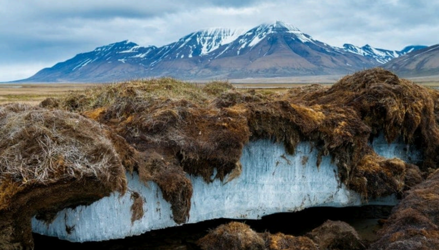

Projet Enseignement Scientifique - Terminale
Sujet : En quoi la fonte du permafrost menace-t-elle la survie de l’humanité ?

Réalisé par : Bouanani2 - Benjelloun - Chbouki
Sous la supervision de : Mme Le Magoarou
SOMMAIRE :
- I. La cause primaire de la fonte du permafrost : le réchauffement climatique
- II. Les conséquences directes de ce phénomène : menace de la stabilité des sols et des bâtiments
- III. Conséquences biologiques du phénomène : libération de mercure et de bactéries ainsi que les risques qui y sont associés
I. Le réchauffement climatique :
II. Les conséquences directe de la fonte du permafrost :
A. Hypothèse étudiée :
Les constructions ne risquent pas d'être déstabilisées ou de s’effondrer à cause de la fonte du permafrost, puisqu’elles sont construites sur une couche qui se veut plus compacte, plus résistante, plus solide, et qui ne fond pas, contrairement au permafrost situé en dessous. Dès lors, la fonte du permafrost ne devrait donc avoir aucun impact négatif sur les habitations et ne menacerait donc pas la sécurité des populations des zones concernées
B. Protocole expérimental proposé :
Objectif de l'expérience : Étudier l'effet des gaz à effet de serre (responsables notamment du réchauffement climatique), en particulier du CO2, sur la fonte du permafrost, ainsi que les conséquences de cette fonte sur les habitations et les habitants
Matériel nécessaire :
- Trois cloches en plastique transparentes avec couvercles
- Thermomètre
- Bloc de glace
- Terre
- Legos ou jeux de construction (assez compacts pour représenter au mieux les bâtiments)
- Source de CO2 (par exemple, une tablette effervescente)
- Chronomètre
- Source de chaleur (si nécessaire afin d’augmenter plus rapidement la température)
Protocole expérimental :
-
1. Préparation des cloches :
- Cloche 1 : Placer un bloc de glace sur un support et ajoutez des Legos par dessus. Introduire une source de CO2 (une tablette effervescente ou combustion (à voir avec Mme Le Magoarou)) à proximité des Legos.
- Cloche 2 : Placer un bloc de glace au fond d’un support et y ajoutez des Legos sans ajouter de source de CO2.
- Cloche 3 : Ajouter de la terre au fond de la cloche et placez des Legos dessus, sans ajouter de source de CO2.
Si la fonte de la glace n’est pas assez rapide, ajouter une source de chaleur sous chaque cloche afin d’accélérer la fonte des glaces.
-
2. Initialisation de l'expérience :
- Démarrer les mesures de température dans chaque cloche à partir du moment où tous les éléments sont en place.
- Enregistrer la température de départ dans chaque cloche sur un logiciel de modélisation numérique (Regressi par exemple).
-
3. Observation de la fonte :
- Noter et enregistrer, à intervalles réguliers, la fonte de la glace dans chaque cloche.
- Mesurer la température à des intervalles réguliers (par exemple, toutes les 15 minutes) pendant une période déterminée.
-
4. Analyse des résultats :
- Comparer la vitesse de fonte de la glace dans la Cloche 1 (avec CO2) par rapport à la Cloche 2 (sans CO2).
- Comparer également la différence de température entre la Cloche 1 et la Cloche 2.
- Observer l'état de la terre dans la Cloche 3 et évaluez son impact sur la fonte de la glace et la température.
- Prélever, à l’issue de l’expérience, le volume ayant fondu pour chacune des cloches et mesurer son volume.
-
5. Simuler les conséquences sur les habitations :
- Pendant que l’on observe la fonte, faire un time-lapse des Legos de chaque cloche pour simuler l'effondrement potentiel des structures sur le permafrost dégelé.
- Mesurer la température après avoir retiré les Legos pour évaluer les conséquences de la fonte sur l'environnement intérieur de chaque cloche.
-
6. Conclusion :
- Résumer les observations et tirer des conclusions sur l'impact des gaz à effet de serre sur la fonte du permafrost et les conséquences sur les habitations.
- Valider ou invalider l’hypothèse de départ (précisée plus haut).